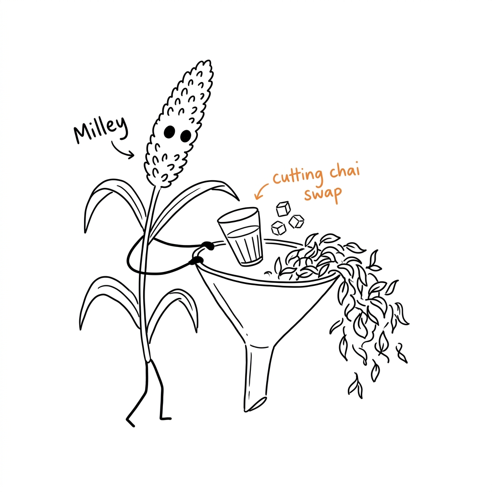

Reclaim your 3 PM focus by swapping sugary tapri chai for ancient grains.
It is 3:00 PM on a hectic workday. Your eyes are heavy, your keyboard feels heavy, and your mental clarity is fading fast. For decades, the standard response across Indian corporate offices has been the same: a quick trip to the office canteen for sugary machine-brewed tea, or a walk down to the nearest street corner "tapri" for a cup of high-sugar cutting chai.
While this provides an immediate jolt of energy, it comes at a major cost. The high concentration of refined white sugars and heavy caffeine triggers a rapid spike in blood glucose, followed shortly by an aggressive insulin response. By 4:00 PM, you are hit with the "sugar crash"—leaving you more fatigued than before.

Millets like Ragi (Finger Millet) and Kangni (Foxtail Millet) have been dietary staples in India for thousands of years. They are naturally gluten-free and loaded with complex carbohydrates.
Because complex carbs have a very low Glycemic Index (GI), they digest slowly, releasing glucose gradually into your bloodstream. This provides a steady, flat-line energy curve rather than the sharp mountain peaks and valleys of processed drinks.
Think of it as your dadi's kitchen wisdom rebuilt for your modern workspace. By slow-brewing finger millet with cardamom and natural jaggery (Ragi Elaichi Chai) or refreshing foxtail grains with raw honey and black salt (Kangni Lemon Sharbat), you nourish your body with minerals like calcium, magnesium, and dietary fibers.
The result? Sustained mental clarity, healthy digestion, and zero afternoon fatigue. Swap your caffeine routine today and feel the difference.